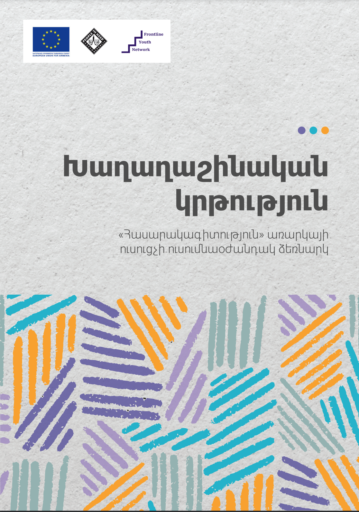
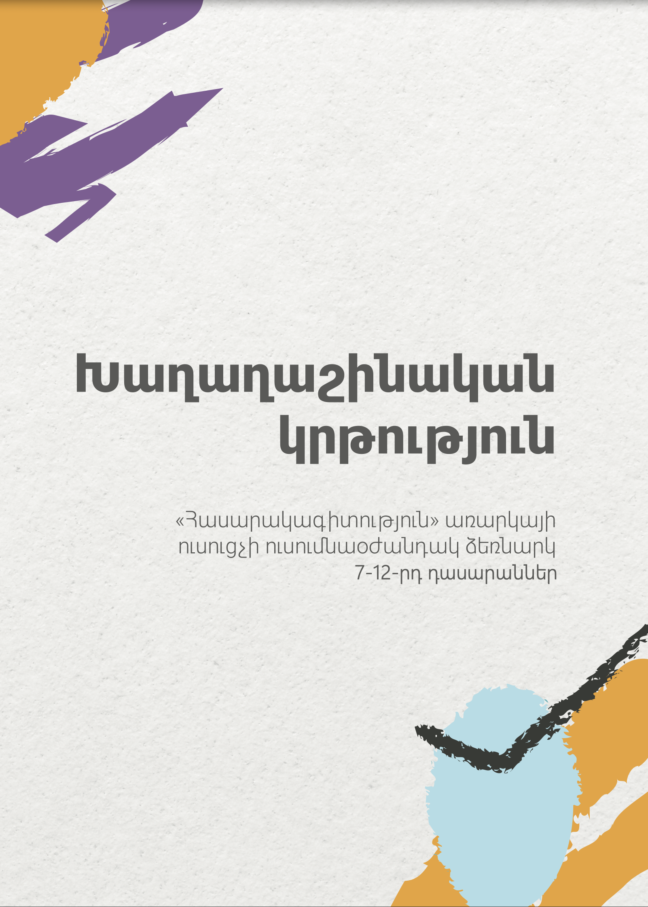
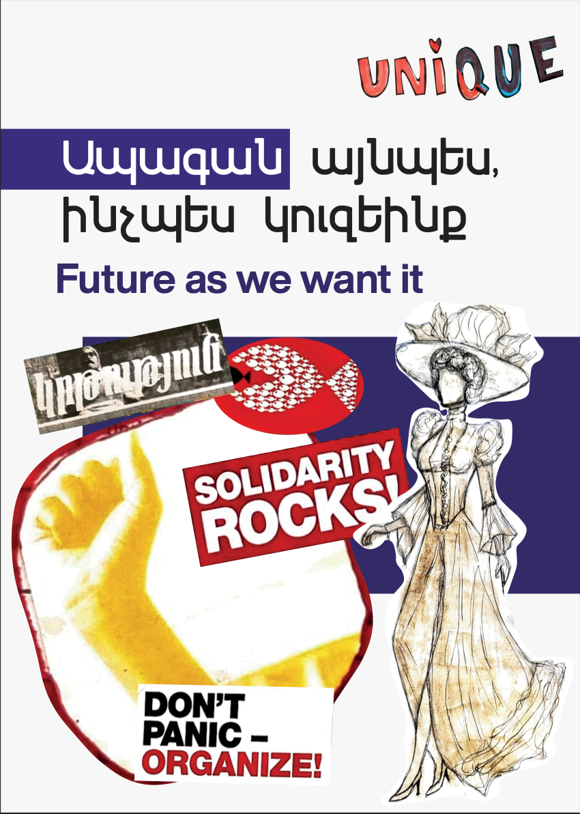
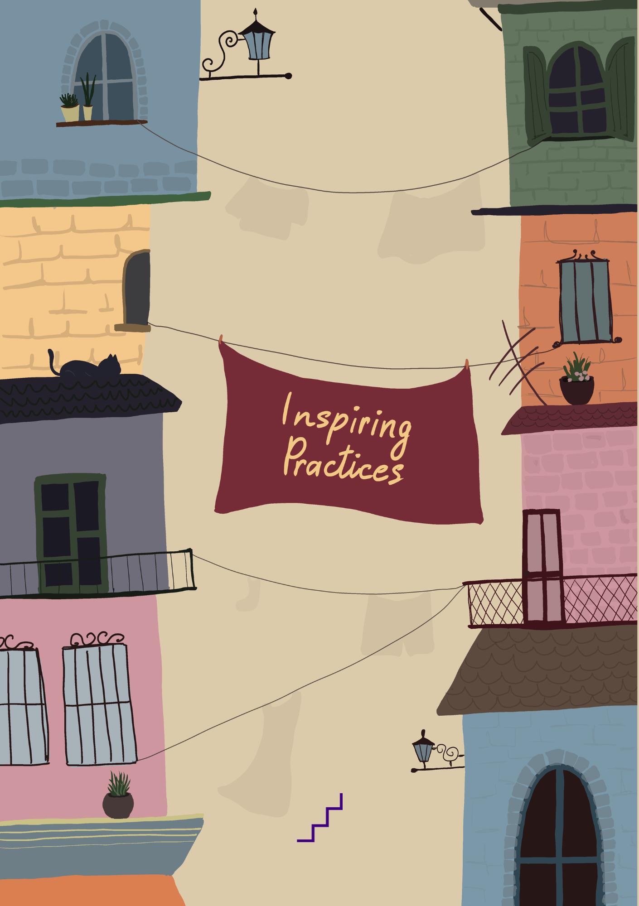

Open-access library
Electronic Resources
Explore Frontline's collection of educational publications, handbooks, and practical learning resources developed for young people, educators, youth workers, and community practitioners.
Free to download


11 resources
EducationalPrinted copies
Bring these resources into your school or community.
If you are interested in receiving printed copies of any publication for your school, organization, or community, please contact us by email with the title of the resource and the number of copies you need.
Contact us